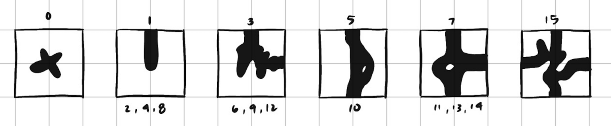
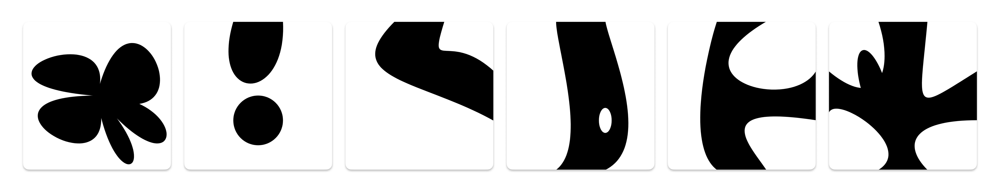
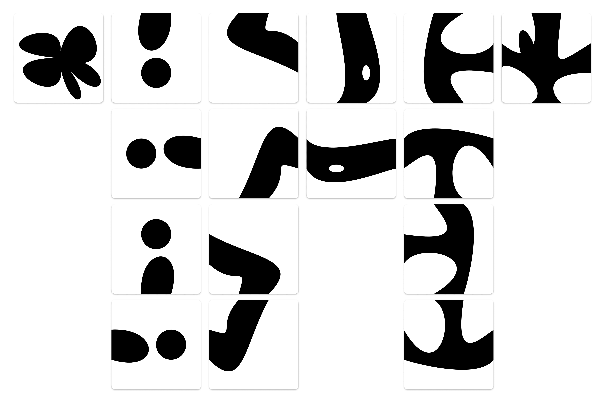

An experimentation using Wang tiles
Computing has become a medium for creating generative artwork because of its ability to mathematically provide a balance of randomness and predictability. The ease of generative art lies in its potential to construct infinite iterations of a design all with a single algorithm.
Wang tiles were first proposed by mathematician Hao Wang through a model of square like shapes that could be placed side by side to create a an infinite plane.
For my Wang tile algorithm, I created my own set of 16 tiles that can be configured using a set of constraints to construct an iterative pattern.
These 16 tiles were curated with the following parameters: 1 that is an unconnected shape, 4 connecting to just 1 side, 4 connecting to 2 adjacent sides, 2 connect to 2 opposite sides, 4 connecting to 3 sides, and 1 connecting to all 4 sides.
After following this basic sketch, the tiles were constructed one by one using a series of ellipses, rectangles, and curves to create the following set of tiles.
From there, the rest of the 10 tiles came from simply rotating tiles 1, 3, 5, and 7.
